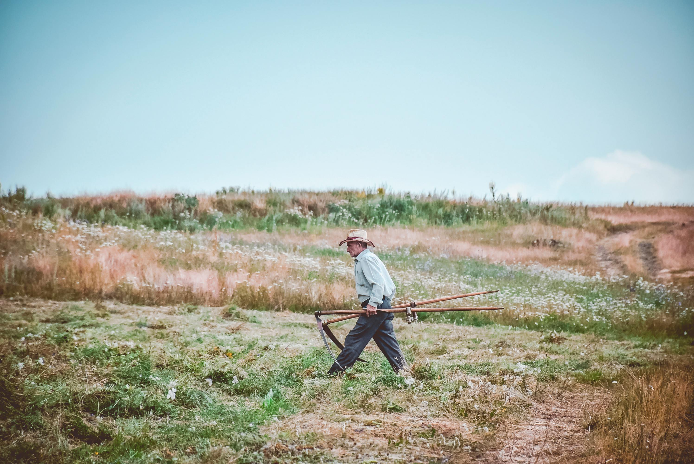

Conectando pequenos produtores a instituições que precisam de alimentos.
O Campo Solidário conecta pequenos produtores rurais a instituições sociais, ajudando a reduzir o desperdício de alimentos e levando comida para famílias e instituições que precisam.
Pequenas ações gerando grandes mudanças.
Alimentos doados
Instituições ajudadas
Famílias beneficiadas
Agricultores parceiros
Fazenda Boa Esperança com 230kg doados.
Lar Esperança recebeu 410kg de alimentos.
Um processo simples que conecta agricultores e instituições.
Agricultores registram alimentos disponíveis.
Instituições encontram doações próximas.
O contato é feito diretamente pelo chat.
Os alimentos chegam às famílias.
🥬 Alface - 10kg
📍 Conselheiro Mairinck - PR⏰ Registrado ontem às 09:30
🍎 Maça - 5kg
📍 Japira - PR⏰ Registrado ontem às 16:27
🥦 Couve - 10kg
📍 Ibaiti - PR⏰ Registrado hoje às 08:21
🍌 Banana - 15kg
📍 Tomazina - PR⏰ Registrado ontem às 20:53
